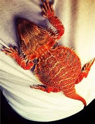

Team Åsa, Maurizio, Fredrik och Florian, Pernilla
Our first project - row1
Maurizios code
Florians line!
Nu lägger vi till en till paragraf
Ändrar i master
another branch demon
Next chapter
another chapter Pernilla
another chapter Pernilla
Åsas chapter>Åsas chapter
Barbed agama is a lizard that origins from Australia.
The size is around 50 centimeters from tail to nose, females are slightly smaller.
The lizard can be 15 years old but normal lifespan is 7 to 10 years

Pernillas chapter
During weekends and holidays I like to go to a little town called Glommen. It is situated in Halland, by the westcoast of Sweden.

You can walk to the long sandy beach with low dunes and shallow water from Glommen. If you need a break from the water, you can take a walk along the charming marina or head out to the headland to get a closer look at Glumstenen - Glum Rock. Shops and restaurants are close at hand.